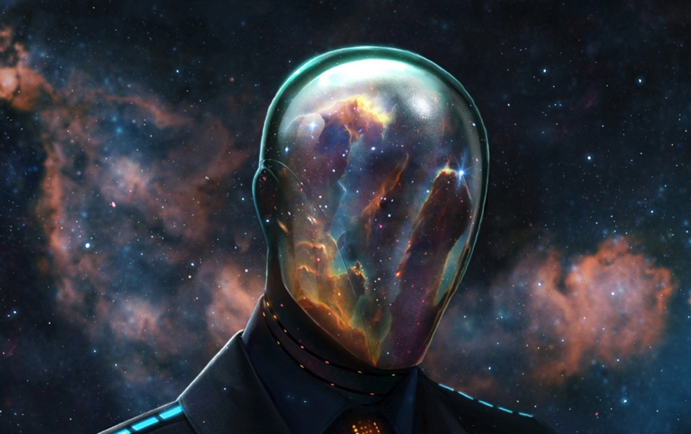

Platon afirmaba que el arje estaba compuesto de 3 elementos fundamentales:
| Elemento | Características | Función |
| El uno | Esencia única e inmutable | Causa de la existencia |
| El ser | Realidad verdadera y eterna | Modelo para la creación |
| La materia | Esencia cambiante y contingente | Receptáculo para la creación |
Platón, el influyente filósofo griego, consideraba que el Uno (también conocido como el Bien) era uno de los elementos fundamentales del arje, o principio básico, que sustentaba la realidad. Para Platón, el Uno era la esencia suprema y la causa de todas las cosas.
Según la filosofía platónica, el Uno era un concepto abstracto y trascendental que trascendía el mundo sensible y era eterno e inmutable. Representaba la unidad y la perfección en sí misma, siendo la fuente y la causa de la multiplicidad y la diversidad que observamos en el mundo fenoménico.
Platón consideraba que el Uno era el principio unificador que permitía la existencia de todas las cosas, proporcionando orden y armonía al cosmos. Era el origen de todo conocimiento verdadero y se creía que era alcanzable a través de la filosofía y la contemplación intelectual.
El Uno también estaba estrechamente relacionado con la noción de la Idea del Bien en la filosofía platónica. Según Platón, las Ideas, que eran entidades perfectas e inmutables, se derivaban del Uno y constituían la realidad última y verdadera. El Uno proporcionaba la base y la estructura para la existencia de estas Ideas, que eran los modelos eternos e invariables de las cosas que percibimos en el mundo sensible.
En resumen, para Platón, el Uno era un elemento fundamental del arje y representaba la esencia suprema y unificadora de todas las cosas. Era la fuente de la multiplicidad y la diversidad en el mundo, así como la causa del conocimiento verdadero y la base de las Ideas perfectas y eternas.
Platón, en su filosofía, consideraba que el Ser era otro elemento fundamental del arje, junto con el Uno y la materia. El Ser representaba la existencia misma y la realidad de las cosas, y era fundamental para comprender la naturaleza de la realidad.
Según Platón, el Ser era la manifestación de las Ideas en el mundo sensible. Las Ideas eran entidades eternas y perfectas que existían en un plano superior al de las cosas materiales y sensibles. El Ser, por lo tanto, se refería a la participación de las cosas en esas Ideas, lo cual les otorgaba su verdadera existencia y su ser.
Platón argumentaba que el Ser era permanente e inmutable, a diferencia de las cosas materiales que experimentaban cambios y transformaciones. Las cosas materiales eran solo copias imperfectas de las Ideas y solo adquirían su verdadero ser a través de su participación en esas Ideas.
El concepto del Ser en la filosofía platónica también estaba relacionado con la noción de la realidad y la verdad. Platón sostenía que solo las Ideas eran realmente reales y verdaderas, mientras que las cosas materiales eran meramente sombras o reflejos imperfectos de esas Ideas. El Ser, entonces, era la base de la realidad y la verdad, permitiendo una comprensión más profunda de la existencia.
En conclusión, para Platón, el Ser era un elemento fundamental del arje y representaba la existencia misma y la realidad de las cosas. A través del Ser, las cosas participaban en las Ideas eternas y perfectas, adquiriendo su verdadera existencia y revelando la base de la realidad y la verdad.
En la filosofía de Platón, la materia era otro componente esencial del arje, junto con el Uno y el Ser. Si bien Platón consideraba que la materia era inferior a las Ideas y al Ser, desempeñaba un papel importante en la manifestación de la realidad fenoménica.
Platón concebía la materia como un sustrato indeterminado y cambiante que permitía la manifestación de las formas y las Ideas. Consideraba que la materia era maleable y receptiva, capaz de adquirir diferentes formas y características según la influencia de las Ideas.
Sin embargo, Platón también veía a la materia como una fuente de limitación y transitoriedad. Creía que las cosas materiales eran imperfectas y efímeras en comparación con las Ideas, ya que estaban sujetas a cambios y corrupción.
La materia, en la filosofía platónica, se asociaba con el mundo sensible y la apariencia engañosa de las cosas. Platón consideraba que la realidad verdadera yace en las Ideas, mientras que las cosas materiales eran solo sombras imperfectas de esas Ideas.
A pesar de su carácter limitado, la materia desempeñaba un papel crucial en el mundo fenoménico, permitiendo la diversidad y la multiplicidad de las formas. Era a través de la interacción entre las Ideas, el Ser y la materia que se daba lugar a la existencia de las cosas materiales y se experimentaba la realidad sensible.
En resumen, para Platón, la materia era un componente esencial del arje, aunque inferior a las Ideas y al Ser. La materia permitía la manifestación de las formas en el mundo sensible, pero también implicaba limitación y transitoriedad. Era a través de la interacción entre las Ideas, el Ser y la materia que se experimentaba la realidad fenoménica.
